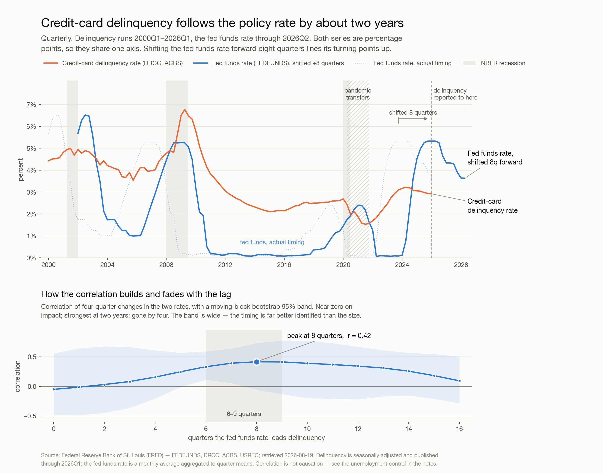

Executive readout · credit-risk data science Generated in a Claude Code session on 2026-08-19 · data retrieved from FRED that day

Credit-card delinquency lags policy-rate changes by roughly two years — eight to ten quarters. In the same quarter, the two series are effectively uncorrelated. A risk team reading current-quarter rates against current-quarter delinquency is reading noise.
| Series | FEDFUNDS — effective fed funds rate, monthly, through July 2026 |
DRCCLACBS — credit-card delinquency rate, all commercial banks, quarterly, through 2026 Q1 | |
| Window | 2000 onward, aligned to 105 quarters |
| Method | Cross-correlation of year-over-year changes with bootstrapped 95% confidence bands, a distributed-lag regression, a Granger causality test, and a per-episode table of rate-cycle peak → delinquency peak |
The practical consequence is about timing, not direction. A tightening cycle's effect on card portfolios shows up roughly two years later, which means:
The chart is the actual output of the 2026-08-19 run. The figures above are transcribed from that run's recorded results — they were not recomputed when this page was assembled, and the analysis code is not preserved here because the workspace it ran in is wiped between demonstrations by design.
Correlation is not causation, the sample is one country over one 26-year window, and the pandemic period is a genuine structural break rather than an outlier to be discarded. Treat this as a well-evidenced starting point for a risk conversation, not as a model.